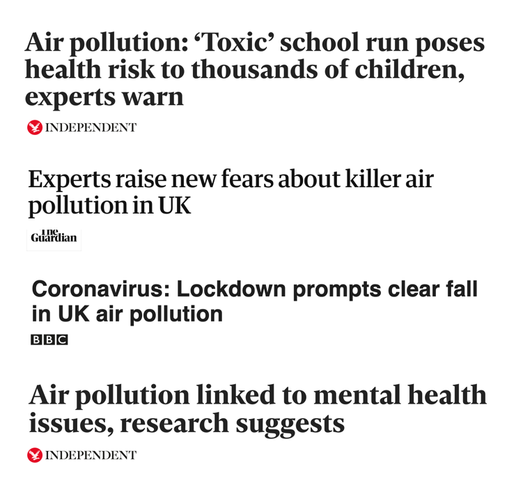

Tech Shed Frome, in partnership with Frome Town Council, are developing a network of sensors to enable the community to see live data on air quality around the town.
Below are the sensors we have installed in Frome so far. We've got more coming so keep checking back. Find out how you can take action, get involved and add your own sensor.
Our vision is of a healthy town where everyone can breathe clean air, vehicle use is low and walking and cycling is the norm for local journeys. Clean Air for Frome aims to empower the community to take action by understanding air quality impacts around the town.


Air pollution is the biggest environmental threat to health in the UK and contributes to 40,000 deaths in the UK each year. Health impacts include coronary heart disease, stroke, respiratory disease, lung cancer and asthma. Air quality particularly affects children and older people. The adverse health effects caused by air pollution are increasingly being recognised and debated at a national and international level.